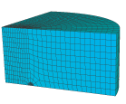

三维断裂模型本例子是对一个完全三维裂纹模型的环路积分评估的说明，本例子提供了方法的验证（线弹性响应）， 因为本模型有实际结果可以比较。
Abaques提供J积分，应力强度因子（KI）,T-应力的值，在三维模型中，该值是是沿着裂纹尖端前沿的位置函数。 积分路径可以使用多种，因此，积分应该是与路径无关的，不同路径得出的值的分散性可以作为计算结果质量的度量。Abaqus中 计算环路积分时采用的主要积分方法即使在较粗的网格下也能得到准确的结果，就像本例这样。Abaqus基于传统的有限元法或扩展有限元法（XFEM）， 为断裂力学研究提供了这些参数的评估。
1.问题描述
本例中分析了两个几何体。另外，同时采用了传统的有限单元法和XFEM法（扩展有限单元法）。
（1）半无限大空间中半椭圆裂纹
第一个分析的几何体模型是半空间中的半椭圆形裂纹，如图 1所示。
 裂纹以Model 1 型模式加载远场拉力。如果使用传统的有限单元法，由于对称性，只需分析四分之一模型。
网格划分如图 2所示 。
裂纹以Model 1 型模式加载远场拉力。如果使用传统的有限单元法，由于对称性，只需分析四分之一模型。
网格划分如图 2所示 。

使用的单元是降阶单元（C3D20R)。在裂纹尖端的节点中，该单元的中间节点移动到了靠近裂纹尖端的四分之一处。四分之一节点
方法提供了应变奇异性，因此改变了裂纹尖端附近的应变场的模拟。裂纹前沿的法线用来表名裂纹扩展的方向。网格延伸的足够远，
使得模型远处表面的边界条件对结果的影响可以忽略不计。围绕裂纹尖端的三组环单元用来计算环路积分。
当使用扩展有限单元法时，网格无需与裂纹几何形状进行匹配。特殊功能函数与额外的自由度向结合保证了裂纹的存在。 该方法还消除了在评估轮廓积分时明确定义裂纹前沿或指定虚拟裂纹扩展方向的要求。基于单元节点标明的水平集的距离函数，自动 获得计算环路积分的数据。该几何体采用的网格是一阶块单元（C3D8），如下左图。裂纹前沿由输出变量PSILSM的水平设定等值线图表示，如下右图所示。
（2）矩形板中的半椭圆形裂纹
分析的第二个几何体是矩形板中的半椭圆形裂纹，如下图所示。该板受到均匀的拉力作用。由于模型的对称性，使用传统的有限单元法时，只需 分析四分之一模型即可。相对于板厚t的几何尺寸如下：半高16；半宽8；中平面裂纹深度0.6；表面裂纹宽度2.5,因此，表面裂纹纵横比为0.24。 使用传统有限单元法的网格划分及剖面图如下所示。该模型中，传统有限单元法使用的是C3D8单元，扩展有限单元法使用的是C3D8和C3D4单元。
2.建模与编程
（1）半无限大空间中半椭圆裂纹
- 提取
3DEllipticCrackC3D20R_model.pyabaqus fetch job=3DEllipticCrackC3D20R_model.py
- 运行
3DEllipticCrackC3D20R_model.pyabaqus cae noGUI=3DEllipticCrackC3D20R_model.py //如果要使用图形界面，请使用 abaqus cae script=3DEllipticCrackC3D20R_model.py
- 如果是以图形界面打开的话，就在CAE中提交任务，或者提取
3DEllipticCrackC3D20R_job.py然后提交abaqus cae noGUI=3DEllipticCrackC3D20R_job.py //如果要使用图形界面，请使用 abaqus cae script=3DEllipticCrackC3D20R_job.py
获得的结果如下：
各文件的说明如下：
.cae模型文件:记录了模型建立的详细过程。.rpy命令记录文件。.dat数据文件：文本输出信息，记录分析、数据检查、参数检查等信息。ABAQUS/Explicit 的分析结果不会写入这个文件。.msg是计算过程的详悉记录，分析计算中的平衡迭代次数，计算时间， 警告信息，等等可由此文件获得。用STEP模块定义。.odb输出数据库文件，即结果文件，需要由Visuliazation打开。.prt零件信息文件：包含了零件与装配信息,restart时需要。.sim线性动力学数据文件。 它是在基于SIM的线性动力学分析的频率提取过程中编写的并用来存储特征向量，子结构矩阵和其他模态系统信息。 重新启动时需要此文件。.sta状态文件：包含分析过程信息。.com命令文件，由Abaqus执行过程创建。.inp输入文件。由abaqusCommand支持计算起始文件，它也可由CAE打开。.jnl日志文件：包含用于复制已存储模型数据库的ABAQUS/CAE命令。
建模详解
打开提取的3DEllipticCrackC3D20R_model.py文件，分析建模的过程。
注意：该文件是提取的！！！是abaqus案例里提供的，不是自己写出来的。这里只是基于对它的分析，然后在GUI中实现而已。
''' ----------------------------------------------------------------------------- Three dimensional model of an elliptic crack in a half space modeled using reduced integration elements (C3D20R). ----------------------------------------------------------------------------- ''' from abaqus import * import testUtils testUtils.setBackwardCompatibility() from abaqusConstants import * import part, material, section, assembly, step, interaction import regionToolset, displayGroupMdbToolset as dgm, mesh, load, job import inpReader
#----------------------------------------------------------------------------
# Create a model
Mdb()
modelName = '3DEllipticCrackC3D20R'
myModel = mdb.Model(name=modelName)
# Create a new viewport in which to display the model
# and the results of the analysis.
myViewport = session.Viewport(name=modelName)
myViewport.makeCurrent()
myViewport.maximize()
#---------------------------------------------------------------------------
# Create a part
# Create a sketch for the base feature
mySketch = myModel.Sketch(name='barProfile',sheetSize=200.0)
mySketch.sketchOptions.setValues(viewStyle=REGULAR)
mySketch.setPrimaryObject(option=STANDALONE)
mySketch.Line(point1=(0.0, 0.0), point2=(100.0, 0.0))
mySketch.Line(point1=(0.0, 0.0), point2=(0.0, -100.0))
mySketch.ArcByCenterEnds(center=(0.0, 0.0), point1=(100.0, 0.0),
point2=(0.0, -100.0), direction=CLOCKWISE)
myBar = myModel.Part(name='Bar', dimensionality=THREE_D,
type=DEFORMABLE_BODY)
myBar.BaseSolidExtrude(sketch=mySketch, depth=50.0)
mySketch.unsetPrimaryObject()
myViewport.setValues(displayedObject=myBar)
del myModel.sketches['barProfile']
# Create a partition for the cracks
face1 = myBar.faces.findAt((16,-10,50),)
edge1 = myBar.edges.findAt((0,-56.5,50),)
t = myBar.MakeSketchTransform(sketchPlane=face1, sketchUpEdge=edge1,
sketchPlaneSide=SIDE1, sketchOrientation=LEFT,
origin=(42.441318, -42.441318, 50.0))
mySketch = myModel.Sketch(name='barProfile',
sheetSize=300.0, gridSpacing=7.5, transform=t)
g = mySketch.geometry
mySketch.setPrimaryObject(option=SUPERIMPOSE)
myBar.projectReferencesOntoSketch(sketch=mySketch, filter=COPLANAR_EDGES)
mySketch.sketchOptions.setValues(gridOrigin=(-42.441318, 42.441318))
mySketch.EllipseByCenterPerimeter(center=(-42.441318, 42.441318),
axisPoint1=(-17.441318, 42.441318), axisPoint2=(-42.441318, 32.441318))
mySketch.autoTrimCurve(curve=g[3], parameter1=0.737435400485992)
f = myBar.faces
pickedFaces = f[face1.index:(face1.index+1)]
myBar.PartitionFaceBySketch(sketchUpEdge=edge1, faces=pickedFaces,
sketchOrientation=LEFT, sketch=mySketch)
mySketch.unsetPrimaryObject()
del myModel.sketches['barProfile']
# Create a shell tube for the inner partition (around the crack tip)
# First create the sweep path
mySketch1 = myModel.Sketch(name='sweepPath', sheetSize=200.0)
g1 = mySketch1.geometry
mySketch1.setPrimaryObject(option=STANDALONE)
mySketch1.EllipseByCenterPerimeter(center=(0.0, 0.0),
axisPoint1=(25.0, 0.0), axisPoint2=(0.0, -10.0))
mySketch1.Line(point1=(0.0, 0.0), point2=(30.0, 0.0))
mySketch1.Line(point1=(0.0, 0.0), point2=(0.0, 23.4493026733398))
mySketch1.autoTrimCurve(curve=g1[3], parameter1=0.570547997951508)
mySketch1.delete(objectList=(g1[5], g1[7]))
mySketch1.unsetPrimaryObject()
# Create a circle and sweep it along the curve created above
mySketch2 = myModel.Sketch(name='innerCircleProfile', sheetSize=200.0,
transform=(-1.0, 6.12303176911188e-16, 0.0, 0.0, 0.0, 1.0,
6.12303176911188e-16, 1.0, 0.0, 25.0, -2.44921270764475e-15, 0.0))
g2 = mySketch2.geometry
mySketch2.setPrimaryObject(option=SUPERIMPOSE)
mySketch2.ObliqueConstructionLine(point1=(-94.28, 0.0),
point2=(94.28, 0.0))
mySketch2.ObliqueConstructionLine(point1=(0.0, -94.28),
point2=(0.0, 94.28))
mySketch2.CircleByCenterPerimeter(center=(0.0, 0.0),
point1=(1.0, 0.0))
myInnerTube = myModel.Part(name='InnerPartition',
dimensionality=THREE_D, type=DEFORMABLE_BODY)
myInnerTube.BaseShellSweep(sketch=mySketch2, path=mySketch1)
mySketch2.unsetPrimaryObject()
myViewport.setValues(displayedObject=myInnerTube)
del myModel.sketches['innerCircleProfile']
# 使用C3D20R单元的半空间半椭圆3维模型
# 导入所需的一些模块，模块里包含了操作cae文件的接口
# 创建模型（Model）
# 调用Mdb( )函数，初始化建模
# modelName：模型的名字
# 建立模型数据库，传入模型名字，数据库的引用为变量myModel
# 创建视图展示该模型
# 使视图在当前显示
# 使视图窗口最大化
# 创建部件(part) # 给基特征创建草图
# myModel 的草图，name为barProfile，草图板大小200
# 在草图上画两条线：（0,0）到（100,0）、（0,0）到（-100,0）
# 在草图上画半圆，圆心为（0,0），起始点坐标为（100,0），终点坐标为(-100,0)
# myModel 的草图，name为barProfile，草图板大小200，
# 模型空间：3D,deformable ；基特征:solid，拉伸
# 拉伸长度为50
# 展示模型，删除草图
# 为裂纹创建一个分区(partion)
# 找到（16，-10,50）点所在的平面和（0，-56.5,50）所在的线，在该平面上作图，展示方向为该线竖直居左
# 草图中心点坐标
# 草图名称
# 在草图上画半椭圆，通过3点确定一个椭圆
# 椭圆中心坐标：（-42.441318, 42.441318）即草图原点坐标
# 另两个轴所在坐标：
axisPoint1=(-17.441318, 42.441318),
axisPoint2=(-42.441318, 32.441318))
# 为内部分区创建一个壳状管（在裂纹尖端附近）
# 建立一个名为sweepPath的草图
# 在草图上画一个椭圆：中心（0,0），两个轴点为（25,0）和（0，-10）
# 画两条线(0.0, 0.0)到(30.0, 0.0)和(0.0, 0.0)到(0.0, 23.4493026733398)